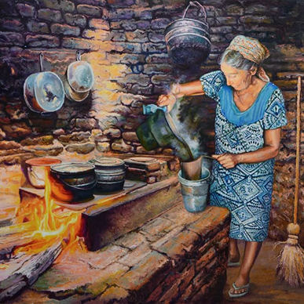

Chocolate abuelita para toda ocasion
- Siente el sabor
- vas a salir temprano?
- No olvides tus galletas
- Una buena chamarra hace la diferencia
- Ya te conte que tengo un canario?
- Tengo un gato muy silvestre
- Vas a querer piquete o piquetote, elije
- La otra vez me tope un alacran
- Vas a volver verdad?
- Cuidate mucho
Directamente desde Santa Maria para el mundo
Para entrar en calor por las mañanas
Hacer chocolate con agua es una manera muy antigua y deliciosa de disfrutar esta bebida, y además resalta el sabor puro del cacao sin la grasa ni la dulzura de la leche. Es común en varias culturas, como en México con el chocolate tradicional oaxaqueño. Aquí te explico cómo se hace: Primero se pone a calentar agua en una olla. La cantidad puede variar, pero normalmente se usan unas dos tazas para una o dos porciones. Mientras el agua se calienta, se agrega el chocolate. Este puede ser en tabletas, en trozos o incluso en polvo, pero lo ideal es que sea un chocolate amargo o semi-amargo, de buena calidad y con alto contenido de cacao. Se coloca en el agua y se va mezclando hasta que se derrita completamente. Cuando el chocolate se ha disuelto, es importante moverlo bien. En muchas recetas tradicionales se usa un molinillo, una herramienta de madera que ayuda a espumar el chocolate al girarlo rápidamente entre las palmas. Si no tienes uno, puedes usar un batidor de mano. Esto no solo mezcla mejor los ingredientes, sino que le da una textura más rica y espumosa. Al gusto, se puede agregar azúcar, canela, vainilla o una pizca de sal. Algunas personas también le ponen un poco de chile en polvo o clavo para darle un toque más especiado. Después de unos minutos, cuando todo está bien incorporado y caliente, se sirve. El resultado es una bebida intensa, cálida y con un sabor profundo a cacao. Sin leche, pero con mucha personalidad.